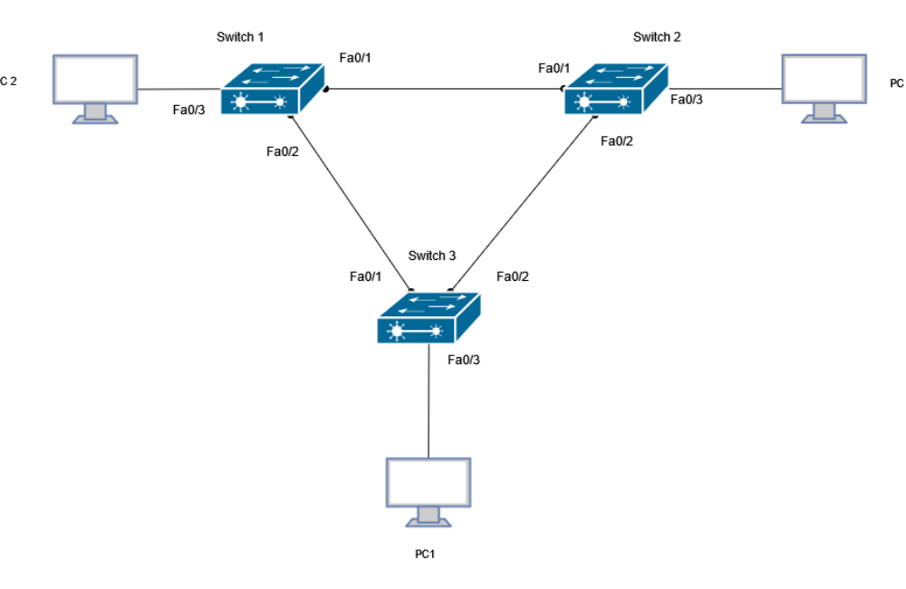
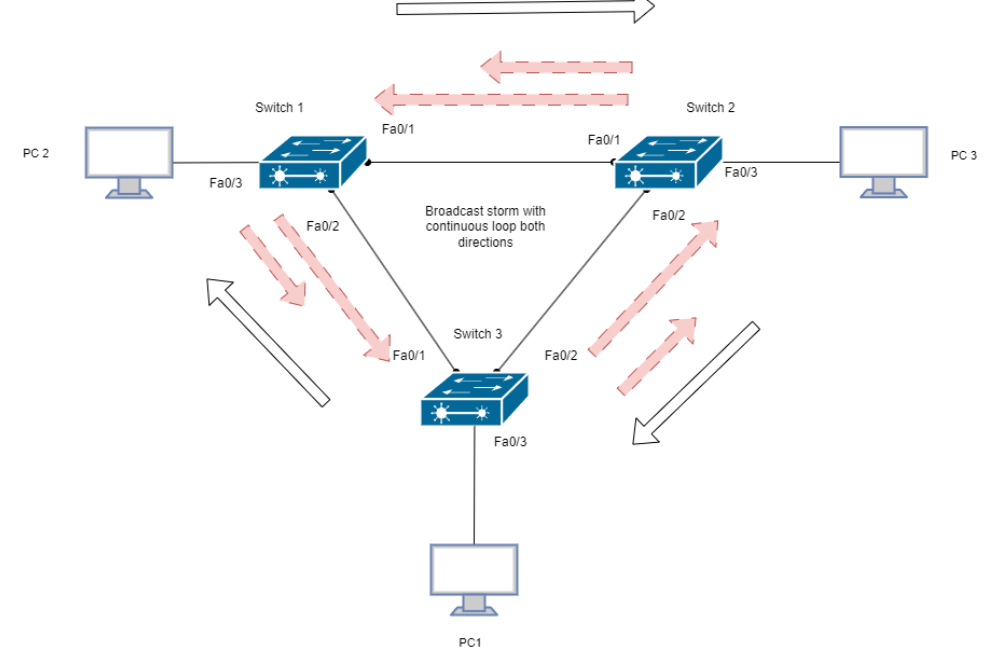
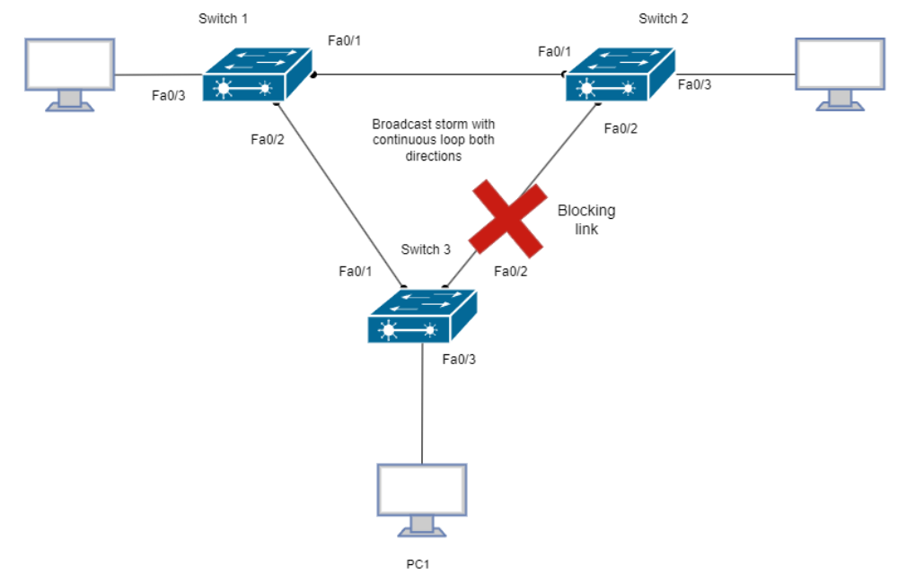
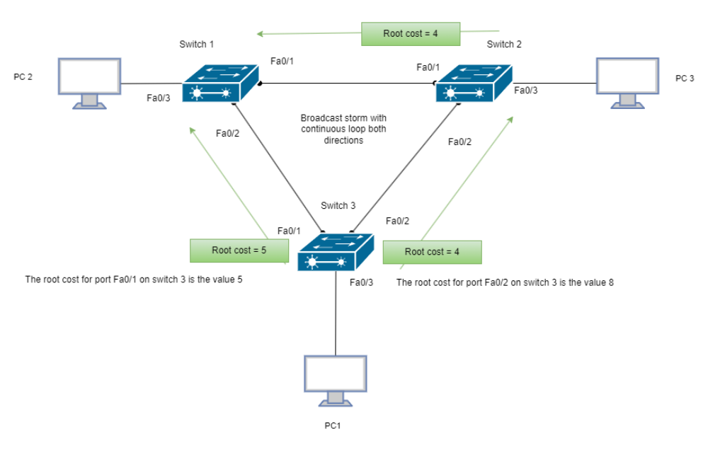
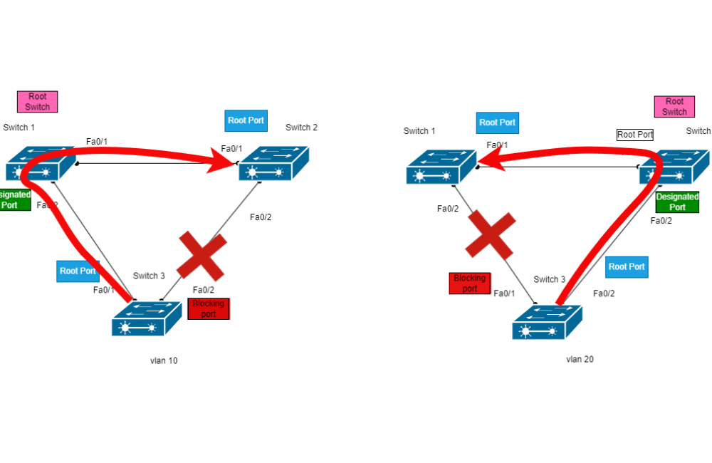
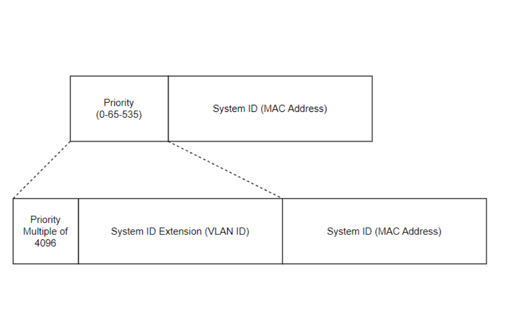
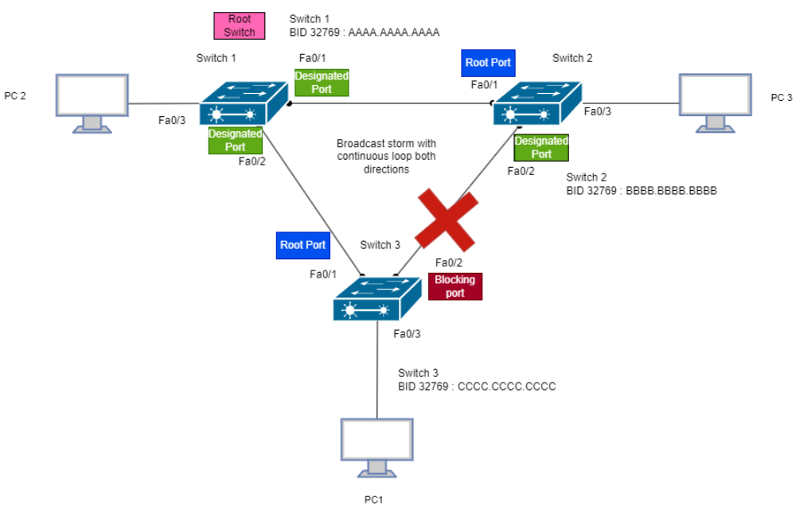
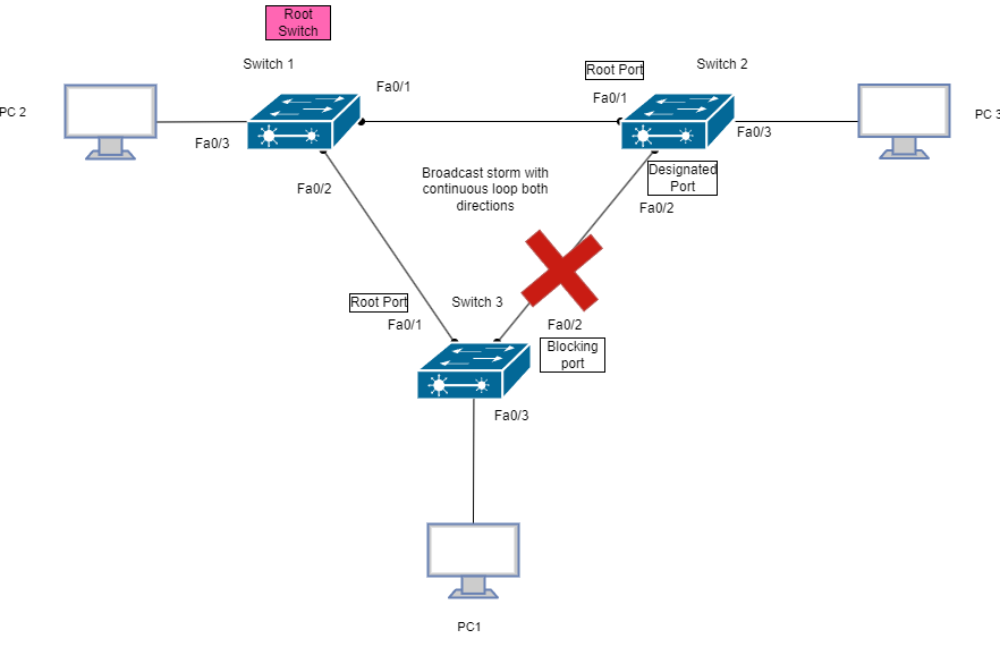

This revised article restores the original learning path, visual topologies and Cisco commands while correcting explanations and connecting Layer 2 resilience to industrial networking.
Revised 25 October 2026 · Network Foundations / Switching & Routing · Original article reconstructed with supplied PDF and illustrations · Evidence note: reproduced historical CLI examples are marked separately from proposed future lab tests.
1. Why Layer 2 redundancy needs STP
Three interconnected switches form a physical triangle. Redundancy provides an alternate path if a connection fails, but an active Ethernet loop can cause storms of flooded frames, MAC-address flapping and repeated frame delivery. Unlike IP, Ethernet does not include a hop-limit that automatically stops circulation.

When PC1 sends a broadcast toward Switch 3, that frame can be replicated towards Switches 1 and 2. With all three inter-switch links forwarding, copies can return around the triangle in both directions. This illustration deliberately simplifies the replication mechanism: the precise behaviour depends on the frame and switch configuration.

2. Spanning Tree Algorithm: the loop-free logical topology
Spanning Tree Protocol uses Bridge Protocol Data Units (BPDUs) to elect one root bridge, select each non-root switch's root port and determine designated ports for shared segments. A redundant port is prevented from forwarding user data while remaining available for topology recovery. A non-forwarding STP port can still receive and process BPDUs.

In this example Switch 1 is the root bridge. Both links from the root operate as designated paths, Switch 2 and Switch 3 choose root ports toward it, and Switch 3's Fa0/2 is the redundant non-forwarding path toward Switch 2. The exact location of the blocking port depends on bridge IDs, costs and tie-breakers, not simply on the physical drawing.

3. Root bridge election and CLI inspection
The lowest bridge identifier (BID) wins. With a system ID extension, the bridge priority field includes a configurable priority component and a VLAN identifier; a MAC address resolves remaining ties. Root selection should be engineered: avoid leaving important topologies dependent on an arbitrary MAC-address tie-breaker.
Below is the original show spanning-tree example reproduced as text from the supplied article. It shows Switch 1 as root for VLAN 1. The 32769 reported priority reflects 32768 base priority plus VLAN ID 1.
Switch-1#show spanning-tree
VLAN0001
Spanning tree enabled protocol ieee
Root ID Priority 32769
Address 0002.4A9D.B231
This bridge is the root
Hello Time 2 sec Max Age 20 sec Forward Delay 15 sec
Bridge ID Priority 32769 (priority 32768 sys-id-ext 1)
Address 0002.4A9D.B231
Interface Role Sts Cost Prio.Nbr Type
---------------- ---- --- --------- -------- ----------------
Fa0/2 Desg FWD 19 128.2 P2p
Fa0/1 Desg FWD 19 128.1 P2pHow to read it: Root ID identifies the elected root; Bridge ID identifies the local switch; Desg FWD indicates a designated forwarding port; Cost is the spanning-tree port cost. This is a historical example from the original paper, not a newly captured verification result.
4. Root path cost and tie-breakers
Each non-root switch chooses the port offering the lowest total cost back to the root. The original example compares a direct cost of 5 from Switch 3 to Switch 1 with a two-hop cost of 4 + 4 = 8 via Switch 2. These are illustrative manually assigned costs: do not confuse them with standard default costs for a given interface speed.

Where total path costs tie, comparison continues through designated (sender) bridge ID, designated port ID and receiving port ID, according to STP's ordered decision criteria.
Common reference path costs
| Link speed | Short path-cost method | Long path-cost method |
|---|---|---|
| 10 Mb/s | 100 | 2,000,000 |
| 100 Mb/s | 19 | 200,000 |
| 1 Gb/s | 4 | 20,000 |
| 10 Gb/s | 2 | 2,000 |
| 100 Gb/s | Not represented in classic short method | 200 |
| 1 Tb/s | Not represented in classic short method | 20 |
Historical reference values from the original article. Platform defaults and configured path-cost method must be verified on the device.

5. Convergence and the difference between STP and RSTP
| Classic STP state | Learns MACs? | Forwards user frames? | Purpose |
|---|---|---|---|
| Blocking | No | No | Prevents an active loop; processes BPDUs |
| Listening | No | No | Participates in topology calculations |
| Learning | Yes | No | Populates forwarding information |
| Forwarding | Yes | Yes | Carries user traffic |
| Disabled | No | No | Administratively or operationally inactive |
Classic STP's familiar listening and learning phases commonly use 15 seconds each under default timer settings; the total interruption during topology change depends on the event and prior state and should not be presented as a fixed 50-second interval. RSTP (IEEE 802.1w) introduces faster transitions with discarding, learning and forwarding states plus explicit port roles. RSTP retains learning; it does not remove it.
| Protocol / Cisco mode | Tree model | Important distinction |
|---|---|---|
| Classic STP / CST | One common tree | Traditional IEEE 802.1D operation |
| PVST+ | One tree per VLAN | Cisco per-VLAN spanning-tree implementation |
| RSTP | One rapid tree | IEEE 802.1w rapid mechanisms |
| Rapid PVST+ | One rapid tree per VLAN | Cisco per-VLAN rapid operation |
| MSTP / MST | VLANs mapped to MST instances | Multiple VLANs can share a spanning-tree instance |
6. Per-VLAN spanning trees
In Cisco PVST+ / Rapid PVST+, different VLANs can select different root bridges and link paths. The original paper illustrates VLAN 10 and VLAN 20 with differing root placement and blocked paths. This is load distribution between VLANs, not per-flow balancing inside a single VLAN.

7. Cisco configuration: restored command reference
Commands below use Cisco IOS-style syntax and require a platform supporting the named mode. Replace VLAN numbers and interface identifiers with the lab's actual configuration.
Choose the spanning-tree mode
Switch(config)# spanning-tree mode ?
pvst Per-VLAN spanning tree mode
rapid-pvst Per-VLAN rapid spanning tree mode
mst Multiple spanning tree mode
Switch(config)# spanning-tree mode rapid-pvst
Switch# show spanning-tree summaryCorrection: the keyword is rapid-pvst without a trailing plus sign, even though the protocol is commonly called Rapid PVST+.
Configure deliberate root placement
Switch-1(config)# spanning-tree vlan 10 priority 4096
Switch-1(config)# spanning-tree vlan 10 root primary
Switch-2(config)# spanning-tree vlan 10 root secondary
Switch-1# show spanning-tree vlan 10
Switch-1# show spanning-tree summarySetting priority 4096 directly and using root primary are alternative ways of setting or influencing priority; do not blindly apply both. The macro-style root commands choose values based on the current topology and software behaviour. Configure base priorities in increments of 4096 where extended system ID applies.

For VLAN 10, a configured base priority of 4096 can be displayed as 4106 in show spanning-tree vlan 10 because the system ID extension contributes VLAN ID 10.
Verify ports and root selection
Switch-1# show spanning-tree
Switch-1# show spanning-tree vlan 10
Switch-1# show spanning-tree interface fa0/1 detail
Switch-1# show spanning-tree summary
Switch-1# show interfaces trunkOriginal evidence: the PDF shows Cisco show spanning-tree and per-VLAN output, plus root-priority configuration examples. The consolidated commands here are edited for readable syntax rather than presented as a fresh lab capture.
8. Why this matters for OT networks
Convergence is not just a networking performance metric when traffic supports PLC-to-HMI communication, supervision or operational monitoring. Validate recovery against the application tolerances and maintenance constraints. STP/RSTP prevents bridging loops, but it does not itself enforce security segmentation. For some industrial designs, vendor-supported redundancy technologies such as MRP, PRP or HSR may better meet recovery requirements.
A measurable follow-on lab (not yet performed)
- Build the three-switch triangle in an isolated lab and record actual software and VLAN configuration.
- Capture root and interface-role output for VLAN 10 and VLAN 20.
- Introduce a controlled uplink failure and measure frame loss and recovery time over repeated trials.
- Compare classic STP and Rapid PVST+ where the devices support both, and record limitations.
- Connect findings to network change control and availability requirements without generalising beyond the test setup.
Engineering conclusion
Redundant cables only create the possibility of resilience. Predictable industrial network behaviour depends on the chosen loop-prevention mechanism, intentional bridge placement, failure testing and knowledge of the connected applications.
Original source: DOCS Hub — Introduction to STP (archived article, 18-page PDF supplied by author). Original screenshots and illustrations have been restored from the author's archive; technical language has been modernised.
Related portfolio work: OT Network Lab · OT segmentation design study.